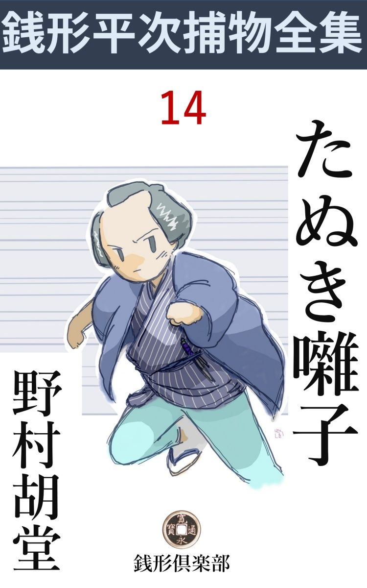
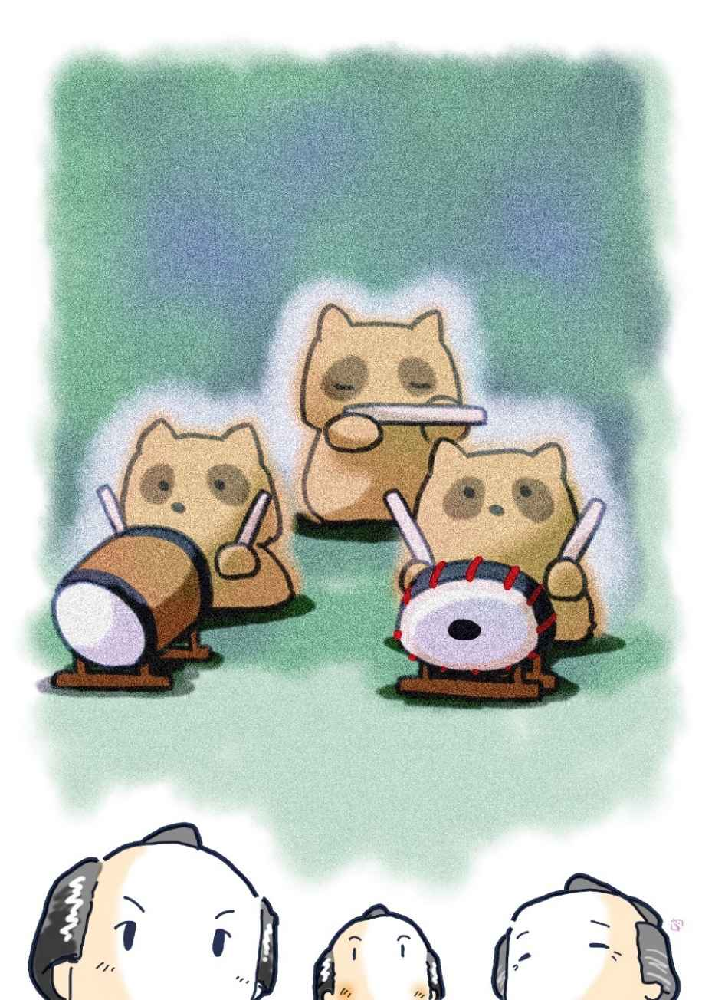

| たぬき囃子: 銭形平次捕物全集第14話 (銭形倶楽部) | |
| 野村胡堂 | |
| ZENIGATA CLUB (2018) | |

一
「親分、あっしは、気になってならねえことがあるんだが」
「何だい、八、先刻から見ていりゃ、すっかり考え込んで火鉢へ雲脂 をくべているようだが、俺はその方が余っ程気になるぜ」
捕物の名人銭形の平次は、その子分で、少々クサビは足りないが、岡っ引には勿体ないほど人のいい八五郎の話を、こうからかい気味に聞いてやっておりました。
遅々 たる春の日、妙に生暖かさが睡りを誘 って、陽が西に廻ると、義理にも我慢の出来なくなるような薄霞 んだ空合でした。
「ね、親分、あっしは、あの話を、親分が知らずにいなさる筈はねえと思うんだが------」
「何だい一体、その話てえのは？ 横丁の乾物屋 のお時坊が嫁に行って、ガラッ八ががっかりしているって話ならとうに探索が届いているが、あの娘の事なら、器用にあきらめた方がいいよ、町内の良い娘が一人ずつ片付いて行くのを心配していた日にゃ、命が続かねえぜ」
「冗、冗談でしょう、親分、誰がそんな馬鹿なことを言いました」
「誰も言わなくたって、銭形の平次だ、それ位のことに目が届かなくちゃ、十手 取 縄 を預っていられるかい」
「そんな馬鹿なことじゃねえんで------あっしが気にしているのは、親分も薄々聞いていなさるでしょうが、近頃大騒ぎになっている本所の泥棒------三日に一度、五日に一度、選りに選って大家 の雨戸を切り破る手口は、どう見ても人間業じゃねえ。石原の親分じゃ心もとないから、いずれは、銭形の親分に出て貰って、何とかしなきゃア納まりがつくめえ------って、先刻 も銭湯で言っていましたが、あっしもそりゃアその通りだ、うちの親分なら------」
「馬鹿野郎ッ」
皆まで言わせず、平次はとぐろをほぐして日向 へ起き直りました。
「ヘエ------」
「ヘエ------じゃないよ、世間様の言うのは勝手だが、手前までそんな事を言やがると承知しねえよ」
「相済みません」
「本所は石原の兄哥 の縄張りだ、頼まれたって俺の出る幕じゃねえ。それに、石原の兄哥にケチなんぞ付けやがって」
「------ヘエ、面目 次第も御座いません」
「馬鹿だなお前は、何て恰好だい、借金の言い訳じゃあるまいし、そう二つも三つも、立て続けにお辞儀をしなくたってよかろう。それに、膝ッ小僧なんか出してさ。一体お前なんか、そんな身幅の狭い袷 を着る柄じゃないよ------ウフ」
平次も到頭吹き出してしまいました。こうなると、何の小言を言っていたか、自分でも判らなくなってしまいます。
「御免下さい」
折から、入口の格子の外で、若い女の声。
「八、ちょいと行って見ておくれ、どうせお静の客だろうが、生憎 買物に出たようだ」
「ヘエ------」
ガラッ八の八五郎は、それでも素直に立上がって今叱られたばかりの狭い袷の前を引張りながら縁側から入口を覗きましたが、何を見たか、弾 き返されたように戻って来て、
「親分、た、大変」
日本一の酢っぱい顔をします。
「何だ、騒々しい」
「石原のが来ましたぜ」
「利助兄哥か」
「いえ、娘のお品さんの方で------」
「何だ、早くそう言えばいいのに、丁寧にこちらへお通しするんだ。それから、お茶を入れる支度をしてくれ、------何時までもそんなところに突っ立ってる奴があるかよ、坐って取次ぐんだぜ、膝ッ小僧に気を付けな、お品さんに笑われるじゃないか」
平次は小言を言いながらも、この面喰った正直者を、庇 うような眼差しで見送りました。
二
お品というのは、石原の利助------平次と事毎に張合った、本所の御用聞------の一人娘で、この時二十二三だったでしょう。二三年前一度縁付いて、夫に死なれて父親の許へ帰って来ましたが、若後家というよりは、如何にも娘々した、水の垂 れそうな美しい女振りでした。
襟の掛った黄八丈、妙に地味な繻子 の帯を狭く締めて、髪形もひどく世帯染みてますが、美しさ反 って一入 で、土産物の小風呂敷を、後ろの方へ慎ましく隠して、平次の前へ心持俯向 いた姿は、傲慢 で利かん気で、苦虫を噛み潰したような顔を看板にしている親の利助とは、似ても付かぬ優しさのある娘です。
「お品さんが来てくれるとは珍らしいネ、お静は折悪しく買物に出かけたが、どうせすぐ帰るだろう、ゆっくり話して行って構わないだろうネ」
小さい時から知っている平次は、ツイこう言った、わけ隔 てのない心持で、渋い茶などを入れてやりました。
「有難う御座います。そうもしてはいられませんが、------実は折入ってお願いがあって伺いました」
娘はモジモジして、何やら言い兼ねている様子です。
「お品さんが、私に？ ヘエ------どんな話かは知らないが、私に出来ることなら何なとして上げよう------何、人がいちゃ言い憎い話？ 大丈夫、お品さんも知っている八五郎が一人いるだけで、あとは皆んな出払っている。八なんざ馬みたいなもので、何を聞かしたって構やしない------あッ、そこにいたのか、ハッハッハッハッ、こいつは大笑いだ」
平次の高笑いに吹飛ばされたように、ガラッ八は納 りの悪い顔を、次の間へ引込めてしまいました。
「実は親分、お聞きでしょうが、あの本所の押込み騒ぎ------、昨夜は六軒目で、番場町の両替渡世井筒屋清兵衛がやられました」
「そうだってね、利助兄哥もさぞ心配だろう」
「それが親分、困ったことになってしまいました。何分入られたのは六軒共大きい家ばかりで、盗られた金も少なくない上、昨夜はとうとう人まで害 めるようなことになったので御座います」
「ほう、それは大変」
「井筒屋の旦那が、折悪 く目を覚して、縁側まで出たところを、脇差で袈裟掛 に斬られたのだそうで御座います」
「フム」
「そうでなくてさえ、石原のも年を取ったとか何とか、世間ではうるさく言いますし、お上の方でもこの間から、何とかやかましく仰しゃいます。石原の利助が、五十近くなって、十手捕縄を召上げられるような事があっては、世間へ合せる顔もないと言って、夜の眼も寝ずに飛廻りましたが、今度ばかりは何としても手掛りがありません。あの負けん気の父が、すっかり気を腐 らせて、三日前から到頭寝込んでしまうような始末で御座います」
「それは気の毒な」
「今日も、平常 お世話になっている、井筒屋の旦那が殺されたと言うのに、行って見ることも出来ません。子分衆に任せて、一人で気を揉 んでおりますが、御存じの通り、身内にもあまり役に立つのもありませんので、はたで見ている私の方が気が詰るようで御座います」
お品は涙ぐましい眼を落して、暫く声を呑みました。
「それは、さぞお困りだろう、私に出来ることなら、して上げたいが------」
「親分、私は親に隠れて、お願いに伺いました。この儘放って置けば、石原の利助の一代の名折 れ、十手捕縄を召上げられないものとも限りません」
「------」
「日頃は親分との間に、面白くない事もあるように聞かないではありませんが、親分は江戸中で評判の腕利き、それに、人の難儀を黙って見ていらっしゃる性分でないことも存じております。どうぞ、親子を助けると思召して、一と肌脱いでは下さいませんでしょうか。親分、お願いで御座います」
お品は何時の間にやら、畳の上へ、水仕事で少し荒れてはいるが、娘らしく光沢 のある、美しい手を落して、そっと袖口を瞼 に当てました。
若々しいと言っても、御用聞の娘に育って、一度は縁付いたこともあるお品は、こう話をさせると、筋も通り情理も立って、隣の部屋で黙って聞いているガラッ八などよりは、余程性根の確りしたところがあります。
「お品さん、よく判った。実は兄哥 にすまないから、遠慮していただけの事で、そんな事に骨惜しみをする俺ではない、何とか角の立たないように、蔭から目鼻を開けて見よう------そう言うと、この平次はひどく器量がいいようだが、決してそんな自惚 の沙汰じゃない。人が変ると見様も変って、飛んだ手柄をすることがあるものだ」
「有難う御座います、親分」
「まだ礼を言うには早いよ。ところで、縄張り違いの私では飛込んで行っても何かと困ることがあるだろう。お品さんにも少しは手伝って貰えるだろうネ」
「それはもう」
「女御用聞もしゃれているだろう、ハッハッハッ、これは冗談だ」
平次は蟠 りない調子でこう言うと、お品もツイ誘 われたように、濡れた顔を挙げて、淋しくニッコリしました。
その時丁度、お静も帰って来た様子。
「それじゃ、あまり遅くならないうちに、一と走り番場町の井筒屋まで行って見て来るとしよう。お品さんは大した用事もあるまいから、お静を相手に、ゆっくり遊んで行きなさるがいい」
平次はガラッ八を促し立てながら、お静と入れ違いに、怪盗の跡 を尋ねて、本所へ馳せ向いました。
三
「銭形の親分、有難う御座いました。親分がお出で下されば曲者は捕まったも同じことで------」
井筒屋の番頭の言葉は、追従 とばかりは聞えません。土地で兎も角、怖い者に思われている石原の利助さえ来てくれないのですから、主人の命と、二三百両の有金をやられた井筒屋にしては、その頃評判の御用聞、銭形の平次の顔を見るのは、全く救いの神のようなものだったのです。
「検屍 は済んだのかい、番頭さん」
と平次。
「へエ、昼前に済んで、主人の死体も始末いたしました。人間業らしくない泥棒が、本所中の大家を荒し廻るとは聞きましたが、まさか、人を害 めるとは思いませんでした」
「飛んだ災難だったネ」
「ヘエ、有難う御座います。こんな事と知ったら、場所柄で、関取衆でもお願いして置くので御座いました」
平次は番頭の愚痴 に追っ掛けられながら、何かと見て廻りました。家族はかなり多勢ですが、打ちのめされたように、悲嘆の床の中にいる女房、まだ小さい子供達、奉公人、いずれも疑 わしい者は一人もなく、泥棒は明かにこの間から噂に上っている本所荒しで、もう六軒も押入ってることですから、家の中では、何にも探しようがあろうとは思われません。
「済まないが番頭さん、雨戸をすっかり締めて、昨夜泥棒が入った時と同じようにして貰えまいか」
「ヘエヘエ、それは、わけもないことで」
井筒屋の雨戸をすっかり閉め切ると、平次は一応外へ出て縁側を一と廻りしました。泥棒の入ったのは、南の縁側、僅かばかりの隙から鋸 を入れて、かなり大きい穴を二つまで開けた上、輪鍵 も棧 も易々と外したことはよくわかります。
平次は有合せの鋸を借りて、
「八、手前これで外から雨戸 を引いて見な、泥棒になったつもりで、出来るだけ静かにやるんだよ」
と平次。
「そんな事はやり付けないから、うまく行かないかも知れませんよ、親分」
「馬鹿野郎、そんな事をちょいちょいやられてたまるものか」
平次は冗談を言いながら、家の中へ入って、主人の寝部屋に陣取りました。
「ようがすか、親分」
「黙ってゴシゴシやりな、一々断わる泥棒なんてものはないよ」
「------」
ガラッ八は、泥棒の鋸 引 きにした雨戸へ、廻し鋸を入れて少しずつ、少しずつ引いております。
白昼、四方は相当やかましい時ですが、それでも、鋸の音は手に取るよう、両替屋の主人や番頭------日頃窃盗 や押込に敏感 になっている者が、どんなによく睡っていたにしても、これだけの細工を知らずにいる筈はありません。
「泥棒の入ったのは暁方 だと言ったね、番頭さん」
と平次。
「ヘエ------かれこれ、寅刻 （四時）過ぎで御座いましたか、旦那様の声に驚いて、駆け付けた時は、雨戸は一枚開けっ放しになって、薄明りが外から射しておりました」
「月はなかった筈だね、昨夜 は？」
「四月の七日で御座います、お月樣は夜半にはなくなります」
平次は、薄暗い中で、その儘腕を拱 きました。
「八」
「ヘエ」
「もう沢山だよ」
「そう言わずにもう少し、あと一寸 で框 に届きますよ」
「馬鹿だな、そんな事をしたら雨戸は台なしだ、泥棒ごっこはもう沢山だよ」
「そうですかね、こんなお手伝いなら何時でもやりますよ」
「呆れた奴だネ」
四
「ところで番頭さん、あれだけの鋸 引 きが、聞えなかったのはどう言うわけだろう。あんな大穴を二つもあけるには、どうしたって半刻 はかかるが」
平次には腑に落ちないことばかりです。
「それがネ親分、昨夜は狸 囃子 がひどくて、どうしても寝付かれなくって弱った位ですから、暁方になってぐっすり寝込んだので御座いましょう。あんな大穴を開けるのを、目敏 いのが自慢の私が知らない筈はありません」
番頭は妙な事を言い出します。
「狸囃子------？」
「え、本所七不思議の一つの狸囃子で御座いますよ。こんな場所ですから、狐や狸のいるに不思議はありませんが、近頃はそれも毎晩のようで、うっかりすると寝そびれて、暁方になってウトウトすることが御座います」
「それは変った話を聞くものだな、本所の狸囃子というのは話の種にはなっているが、真実 にそんなものがあるとは思わなかったよ」
「知らない方は皆んなそう仰しゃいますが、一度本物を聞くと、不気味でなかなか寝付かれるものでは御座いません」
「矢張り狸が腹鼓 でも打つと言ったことかネ」
と平次。
「そんな手軽なもんじゃ御座いません。太鼓と笛で、馬鹿囃子そっくりですが、それが、遠いような近いような、陰 に籠ったような、口ではちょいと申し上げ憎いような不思議なもので御座います」
番頭はすっかり怯 えているものと見えて、この話になると妙に眼が据って真剣になります。

「笛まで入るのは念入りだネ、どこの森でやっているとか、どこの木立でやっているとか、大凡 の見当位は付くだろう」
「それが親分、不思議なんで、随分腕に覚えのある方 が、狸退治をやるんだと言って、囃子の音に見当を付けて、出かけて見るんだそうで御座いますが、東かと思って出かけると、西の方から聞え、南の方のつもりで探していると、北に移るんだそうで御座います」
「へエ、それは面白いな」
「ちっとも面白くは御座いません。私共が聞いたんでも、吾妻橋 の佐竹様お屋敷の辺かと思うと、松倉の方に変り、原庭の松厳寺 の空地かと思うと、急に荒井町の方角に変ったりいたします。
狸囃子 というものは一体こうしたものなんだそうで、大概の方は狸退治どころか、ヘトヘトになって帰ってしまいます」
「いよいよ面白いな、泥棒が狸だとすると、フン捉まえると狸汁が出来るだろう。ガラッ八、一杯飲めそうだぜ」
平次はすっかり悦 に入って、呆気に取られているガラッ八を顧みました。
「親分、狸が雨戸を破ったり、人を斬ったりするでしょうか」
「そこだよ、俺にも解らなくって弱っているのは」
平次はこんな気楽な事を言いながら、一度締め切った雨戸を開けさせて、今度は、斬られた主人清兵衛の死体を、一応見せて貰いました。
右の肩から胸へかけて、たった一と太刀、袈裟掛 に斬った手口は、恐ろしい腕前で、とても狸や狐の仕業とは思われません。
「親分、こいつは狸にしちゃ器用過ぎますぜ」
とガラッ八。
「馬鹿、世の中には、どんな狸がいるか、手前 なんかに解ってたまるものか」
「そうですかねえ、親分」
「ところで番頭さん、その狸囃子 は、何刻ほど続くんだネ」
「宵から始まって、夜中まで、いやどうかしたら、暁方まで続くでしょう。遠くなったり近くなったり、あれが始まった晩は、とても睡られるこっちや御座いません」
「根気のいい狸だネ」
平次はそれっきり黙ってしまいました。狸に興味を失ったのでしょう。
「八、この泥棒狸の手口は、もう少し見なきゃア解らないようだ。この間から入られた家を、一軒残らず歩くとしよう」
「ヘエ------大変ですネ、そいつは」
「骨惜 みしちゃ、いい御用聞にはなれないよ。先ず黙って従 いて来な、帰りは石原の利助兄哥のところを覗いて見舞でも言って行こう」
五
平次とガラッ八は、それから日取を逆に取って、泥棒に入られた家を六軒、すっかり見てしまいました。
井筒屋の前に入られたのは、原庭 の物持後家で、お紺という四十年配の金貸し、これは幸い怪我はありませんが、用箪笥 ごと庭に持出されて、有金三十両ばかり盗られたのを、夢にも知らなかったと言う話、手口は井筒屋と同じこと、雨戸を切り開いた鋸目 から、宵のうちから、狸囃子が聞えたことまで、そっくりその通りです、家族はお紺の外に用心棒とも手代ともなく使っている嘉七という三十男と、下女が一人。
その前に入られたのは、中の郷の長源寺 という寺、これも手口は同じことですが、奪られたのはほんの二三両、住職がつましいので、金があるという評判に釣られた泥棒の失敗 とわかりました。庫裡 の雨戸の鋸目から、狸囃子が宵から聞えたことまで型の通りです。
その前は旗本、深川壱岐 、松倉町の大きい屋敷ですが、身分に恥じて届出もしなかったということで、平次も入って見るわけにも行きませんが、手口にも狸囃子にも変りがなかったことは、近所の人が証明しております。
その前は表町の酒屋、和泉屋徳次郎、これも、型の通り、ところで、一番最初に入られたのは、中の郷で、裕福に暮している石上佐伝次という浪人者、二三年前まではさる大藩に仕えましたが病身なのと、殿様が無法なので自分から退転したという五十年配の人物です。家族は内儀と娘が一人、雇人は昔の草履取であったという四十男が一人。
こう調べ上げて石原の利助のところへ寄ったのは、もう夜でした。
「兄哥、加減が悪いそうだな、どんな塩梅 だ」
「お、銭形のか、遠いところを、わざわざ気の毒だったな、なアに大した事じゃねえが、風邪 を引いたのに、疲れが出たんだろう、明日あたりから、仕事の方に取りかかろうかと思っている」
利助は褞袍 を引っかけて、長火鉢の前へ出て来ましたが、何となく勝 れない顔をしております。
「まア、大事にするがいい、無理をしちゃ後へ悪かろう」
「お品の奴が心配して、医者を呼べの、お詣りをするのと言うが、この年まで、薬というものを嫌いで通した利助だ、今更そんな事をしたって、何の足しになるものじゃねえ」
顔色は悪いが、相変らずの利かん気で、平次もすっかり、今日の始末を打明けそびれてしまいました。
そのうちに、お品は、晩の用意をして一本つけて参ります。
「何にも御座いませんが、有合せで」
と言ったような取なし、これは馴れ合ずくですから、平次も遠慮するようなしないような、ズルズルベッタリ盃を嘗めていると、やがて戌刻 （八時）という頃。
「おや、ありや何だい------」
遠くの方から節面白く、太鼓と笛の音が聞えて来たのです。
「あ、又始まりゃがった」
石原の利助はあまり気にする様子もありません。
「何だいありゃ、兄哥」
「狸囃子 さ、馬鹿馬鹿しい」
「押込の入った晩には、必ず狸囃子が宵から聞えるって言うが、あの音なんだネ」
「世間じゃそんな事を言うが、まさか狸が泥棒と共謀 になっているわけじゃあるめえ」
「いや、そうでないよ兄哥 、俺は一つ、明日は狸狩りをやろうと思うんだが、若い者を少し貸して貰えるだろうネ」
「構わないとも、どうせ遊んでいるようなものだ。あの泥棒と来た日には、若い者なんかの手に負える代物じゃねえ」
平次は間もなく暇乞 をして出ました。が、門口へお品を呼んで、何やら耳打ちするとその儘ガラッ八をつれて、神田の家とは方角違いの、原庭の方へ道を急ぎます。
「親分、どこへ行きなさるんで」
とガラッ八。
「黙ってついて来るがいい、狸のお宿を探すんだ」
「ヘエ------」
ガラッ八は渋々ながら、平次の後から、影のようにピタリとひっ付いて、やってきました。
井筒屋の番頭が言ったように、馬鹿囃子は暫く原庭の方から響いておりましたが、平次が原庭へ行った頃は、何時の間にやら方角が変って、それが松倉の方になっております。
「親分、あまりいい気持じゃないネ」
とガラッ八。
「何をつまらない、狸の方でガラッ八さんが怖 いって言ってるぜ、黙ってついて来な」
平次は昼一度歩いた通り、原庭の金貸後家のお紺の家から逆に取って、中の郷の石上左伝次の家まで五軒を一々調べて廻りましたが、さて何の掴 みどころもありません。相変らず狸囃子は、何処からともなく、人を馬鹿にしたような長閑 さで聞えております。
「今晩もまた、どこかへ入られるだろうが、困ったことに防ぎようがない、ガラッ八、帰ろうよ」
「ヘエー」
二人は何時の間にやら大川端に出ておりました。
「明日は一つ狸退治だ。畜生ッ、その時こそ逃しはしねえぞ」
六
翌る日の狸狩りは、本所中の物笑いの種になりました。
銭形の平次は、子分のガラッ八を伴れて神田からわざわざやって来ると、利助の子分を十人ばかり狩り集めて、西は大川、東は業平橋 、南は北割下水、北は枕 橋 の間を、富士の巻狩りほどの騒ぎで狩り出したものです。
平次は脚絆 に草鞋 と言った装束で、手槍を担ぎ、子分達はさすがにそれほど大袈裟には用意しませんが、それでもいい若い者が、百姓一揆 見たいに、竹槍まで提 げて押し廻したのですから、本所中はお祭のような騒ぎ。
朝から始まって夕刻まで、藪という薮、林という林、墓地から田圃から、町家の裏、軒の下、下水の中まで探し廻りましたが、狸はおろか狐も貉 も飛出しはしません。見かけたのは野良犬とドブ鼠が精々、弥次馬がゾロゾロついて歩いて、江戸ッ子特有の辛辣 な皮肉を浴びせるので、子分達は顔を赤くするような有様です。
陽が暮れて引揚げる時、利助の子分に一分ずつはずんだので、その方の悪口は封じましたが、世上の噂はまことに散々。
「見ろや、銭形とか何とか言ったって、あの態 は何だい。石原の親分が病気でなきゃア、あんな馬鹿なことを黙って見ちゃいめえ」
「全くだよ、狸が泥棒したって話は、開闢 以来だ。猫に小判ならわかるが、狸に小判じゃ洒落 にもならねえ。神田からわざわざ本所まで恥をかきに来たようなものさ」
いやもう滅茶滅茶です。
平次はしかし驚く様子もなく、一向平気な顔をして、予期した幕切れを待っておりました。
それから三日目、とうとうその日が来ました。
「親分、お品さんが見えましたよ」
取次ぐガラッ八をかき退けるように、平次は待っていましたと言わぬばかりに飛出しました。
「お品さん、挨拶は抜きだ、あれはどうなった？」
「親分、とうとう出かけましたよ」
「そいつはしめたッ」
「親分に言い付かった通り、押上の笛 辰 の家を三日見張っていると、今日昼頃どこかの小僧が使に来ました」
「フムフム」
「すると笛辰は夕方からプラリと出かけたんです。余っ程後をつけようと思いましたが、万一覚 られると藪蛇 だと思って、取敢 ず駕籠でここまで馳せ着けました」
駕籠で来たくせに、あまりの緊張にお品は息を切っております。
「それで何もかも片付くだろう。平次の狸狩りにも、見る人が見れば理窟があるってわけさね、お品さん」
「有難う御座います。この上はどうか、お出かけ下すって、手配をお願いします」
「いや、本所は石原の利助親分の縄張り内だ、大急ぎで家へ帰って、どこまでもお品さんが思い付いた事にして、原庭の大法寺＝あの無住になっている荒寺＝の経蔵 に手を入れさせるがいい、狸の巣はそこだ」
「------」
「狸は弱いから、手先が二人も行けば沢山だが、金貸後家のお紺の家には凄 いのがいるぜ。そこへは利助兄哥と、子分の者十人位で、すっかり用意をして踏込むがいい、こっちには手強 いのが要 る」
「親分は」
「俺は行くまでもないだろう、狸はもう罠 に落ちているんだ」
「でも」
お品はひどく心許ない様子でしたが平次に追い立てられて、石原の家へ駕籠で帰りました。
七
その夜の捕物は、平次の狸狩りにもまして本所の人達を驚かせました。
大法寺の経蔵に向った二人の手先は、何の造作もなく、その中で馬鹿囃子をやっている、押上の笛辰と、その弟子で太鼓の上手 と言われた、三吉を縛って来ました。
同時に金貸後家のお紺の家に向った一隊は、そんな手軽なわけに行きませんでしたが、お紺を始め、その手代の嘉七、下女のお松を、どうやら、こうやら大骨折で縛り上げました。後で聞くと、手代の嘉七は武家上りだそうで、腕が仲々確かりしていたので、利助の子分に二三人怪我を拵えましたが、幸いそれもたいしたことでなく済みました。
本所を荒し廻った大泥棒、------井筒屋の主人まで殺した曲者は、言うまでもなくお紺とその手代の嘉七で、狸囃子 は世人を惑 わして、嘉七お紺の仕事を助ける、笛辰と三吉の仕事だったのです。その後、与力笹野新三郎の調べに対して、嘉七は、
「ヘエ、誠に恐れ入りました。狸囃子を使ったのは、本所の七不思議をもじったに相違ありませんが、実は貸本の『絵本太閤記』から思いついたことで、日吉丸が、蜂須賀小六のところから、刀を盗み出すのに、三晩も続けて笠を雨落に置き、小六の心を疲らせて、暁方ウトウトとしたところへ入って首尾よく取ったという術 を用いたので御座います。雨落の笠代りに狸囃子を使ったまでで御座いますが、もう一つ、狸囃子を聞かせたわけは、あの囃子の音に合せて、鋸 を引くと、目の覚めているものでも、一寸気が付かないからで御座います」
と言っております。
この手柄を一人占めにして、石原の利助はどんなに面目をほどこしたかわかりません。近頃は利助に愛想を尽かしていた笹野新三郎も、口を極めてその頭のよさを褒めました。
が、利助にしては、これほど見当の違ったことはありません。自分が何にも知らないうちに、大手柄をしていたのですから、まるで夢のような心持です。
娘のお品を責 めて見ると、これはもう、言いたくて待ち構えていたところですから、何も彼 も平次の指金だったことを一毫 の隠すところなく言ってしまいました。
薄々平次の息が掛っているとは思いましたが、そう判然 わかってしまうと、利助もジッとしてはいられません。手土産を用意して、神田まで一と走り。
「平次兄哥、面目次第もない。何もかもお品から聞いたが、狸囃子の曲者を挙げさせた指金は、兄哥がやってくれたんだってネ」
日頃面白くない仲だけに、利助も我慢の角を折って、畳に手を突きたい心持になります。
「兄哥、冗談じゃない、俺は何を知るものか、狸狩りをやって物笑いの種を拵 えただけさ。曲者の巣を突き留めたのは矢張りお品さんに相違はないよ」
平次はなかなか真実の事を言おうとしません。
「まアいい、折角そう言ってくれるなら、強 って聞くまい。俺の心の中だけで、兄哥の親切を忘れなきゃア------」
利助はこんな事を言って、後は、お静の手料理で酒になりました。
「親分、あっしには腑に落ちない事だらけだ、利助親分に手柄をさせた心持はまあ判るが、どうしてあの曲者がお紺の家にいると解ったんです。後学のために教えておくんなさい」。
とガラッ八は、利助の帰って行く姿を見送りながら、平次に問いました。
「何でもないよ、六軒の雨戸を調べると、あとの五軒は、如何にも狸囃子に合せて、半刻も一刻もかかって引き切ったように、鋸目が細かくなっているが、お紺の家の雨戸だけは、鋸目 が荒くて、一気に引っ切ったことが判ったんだ」
「成程」
「五軒も六軒も荒した曲者が、物持で通ったお紺の家へ入らないのはおかしいと思われるから、自分の家へも入ったように、嘉七とお紺が細工をしたんだよ」
平次の観察は精緻 をきわめます。
「ところで、大法寺の経蔵でやった馬鹿囃子が、どうしてあんなに近くなったり、遠くなったり、東に聞えたり、西に聞えたりしたでしょう」
とガラッ八。
「もっともな疑いだが、太鼓は風呂敷を被 せると音が鈍くなって遠くの方で叩くように聞えるし、笛は上手になると、強くも弱くも自由に吹けるだろう」
「成程ね」
「それから、あの経蔵には、入口が一つと、窓が二つある、その一つ一つを開けたり閉めたりして囃 すと、音は酒井棣のお邸に響いたり、佐竹様の木立に響いたり、どうかすると、大川の方へ抜けたり、いろいろの方角に聞えるんだ。今度一つ試して見るがいい」
「ヘエ------そんな事もありますかねえ」
「まだ判らない事があるかい」
「あの日、昼一度廻ったのに、夜もう一度六軒の家を廻ったのは？」
「あれは大失策 さ、昼は鋸目にばかり気を取られたので、夜もう一度狸囃子をやった場所を探しに行ったんだが、暗くて何にも判らなかったんだ」
「狸狩りは？」
「そこで、翌る日狸狩りということにして、土蔵か、穴蔵か兎も角、何の方角へも自由に囃子の音を響かせるにいい場所を探したんだ。お蔭で銭形の平次は間抜 になって、石原利助が器量を上げたのよ」
「つまらない事になったものですね」
「利助兄哥も、これで引込みが付き、俺もお品さんへの義理が済んだというわけさ」
平次はそう言って豊かにガラッ八を顧みました。頭の鈍いガラッ八にも、何となく失策 平次 の尊 さがわかったような気がしました。
（編注）
作品中には、身体の障害や人権にかかわる、差別的な語句や表現が見られますが、本書が成立した当時の時代背景等が現代とは異なる古典的な文学作品でもあり、著者が故人でもありますので、底本のままとしました。ご理解、ご諒承のほどをお願い申し上げます。
著者---野村胡堂
挿絵---萩 柚月 © 2017
初出---「文藝春秋オール讀物號」昭和七年五月号 文藝春秋社
底本---「錢形平次捕物全集」第一巻 河出書房 昭和三十一年五月五日初版
編集・発行 銭形倶楽部